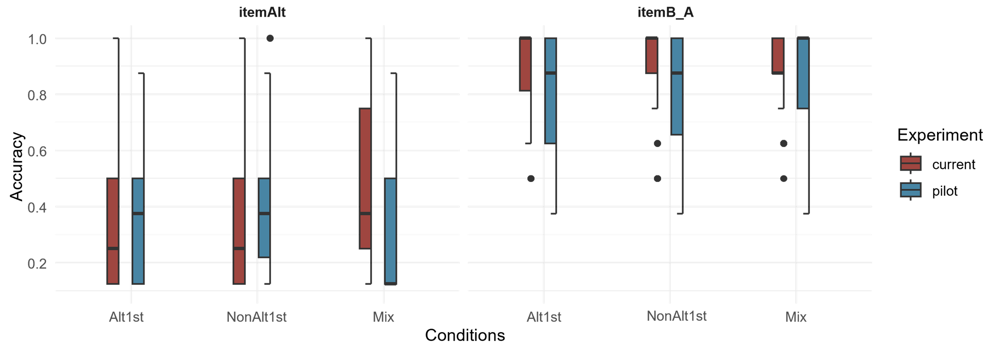
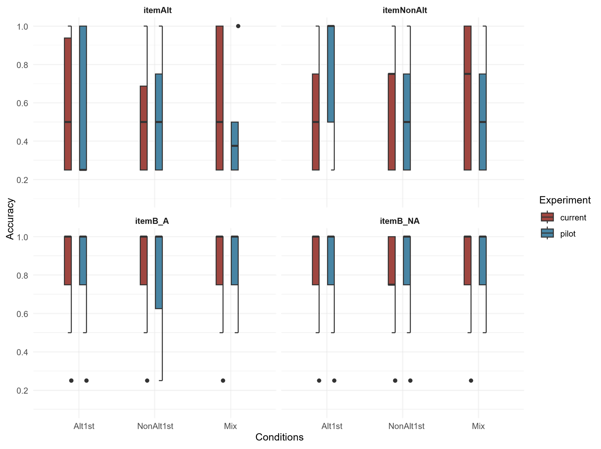
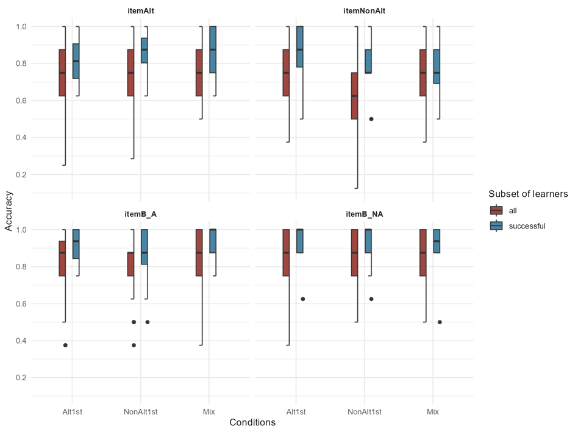
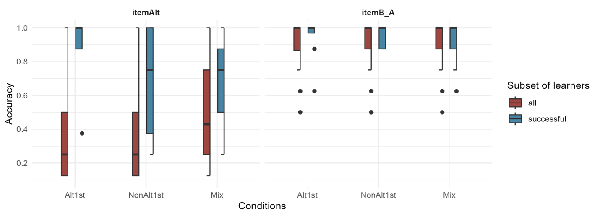
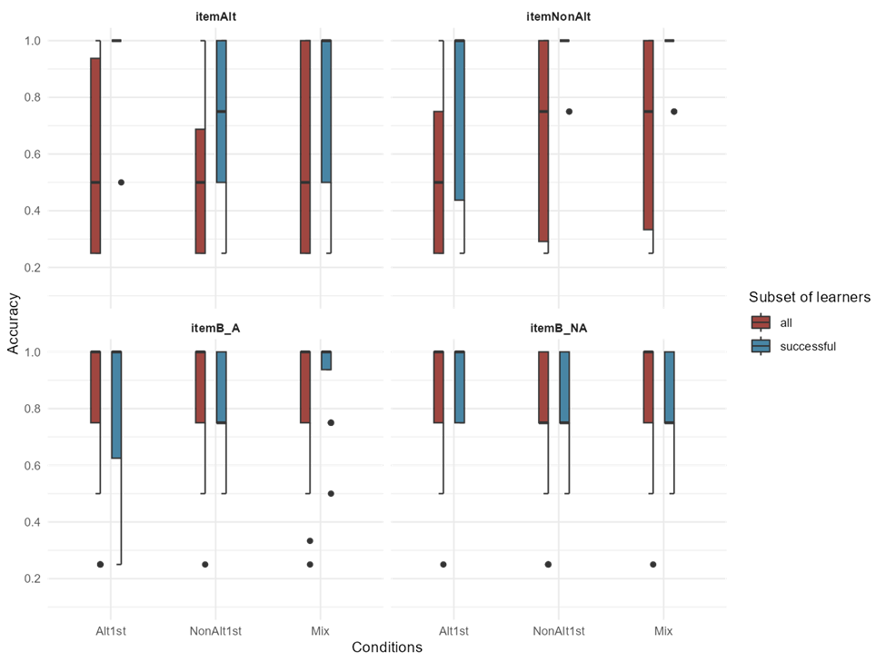

5 Discussion
In this chapter, the results presented in Chapter 4 will be discussed as they relate to the hypotheses and predictions stated in Chapter 2 Section 2.5. The main research question will be discussed in Section 5.1 in light of the main findings about the effect of the order of input data or test trial type on learning followed by the discussion of the predictions regarding the three dimensions of learning in Section 5.2. Subsequently, Section 5.3 discusses the effect of universal biases in segmentation, and Section 5.4 discusses the analysis of the successful learners. Finally, Section 5.5 includes the conclusion and presents future research.
5.1 The effect of all the independent variables on learning
By designing an artificial mini-language exhibiting morpheme-specific phonological patterns, the aim in this implicit learning experiment was to induce inconsistencies in the phonological system underlying the input data. The motivation behind the primary research question was to investigate in what ways the structure of the input data, specifically the arrangement of blocks of training data affects learning. Based on a theory of learning with an error-driven learning algorithm, assuming the same initial state, and the same final state of learning theoretically for all learners in the three conditions of the experiment, the rationale was that structured input data would influence the learning trajectory of learners. The null hypotheses were that learning for all participants in the different conditions would be equally difficult; additionally, that the difficulty of learning would not depend on test trial types. In contrast to these null hypotheses, I would expect that except for item familiarity, the other independent variables in the experiment—training condition (i.e., the learning trajectory), test trial type and their interaction—would be significant predictors of participants’ performance in testing. According to our predictions provided in Section 2.5 in Chapter 2, if the learning trajectories in each condition affect the three aspects in learning and participants’ responses, participants’ performance in each condition would reflect the difficulty in the expected direction. Additionally, if the learning trajectories in each condition affect the extent to which learners learn various items, participants’ performance in each condition would depend on the test trial type.
The results presented in the previous chapter, analyzed through statistical models and post-hoc chi-square likelihood ratio tests indicate the following conclusions regarding our null hypotheses. The interaction of training conditions and test trial types did not significantly improve the model fit, therefore failing to reject our null hypothesis that differences in performance between participants in the three conditions does not depend on the test trial type.
With respect to the other fixed effects in the statistical analysis, the inclusion of the three training conditions, each with a different learning input data structure, significantly improved the model fit. Therefore, this result rejects the null hypothesis that training condition has no effect on participant responses; albeit with the caveat that these results support the prediction only in 2 out of the 3 tasks: task 1 (the phrase judgement task), and task 3 (the novel segmentation task), and not task2 (the familiar segmentation task). The inclusion of test trial types, each with a different item and error type, improved the model fit in all tasks, therefore rejecting the null hypothesis that test trial type has no effect on participant responses. It is important to note that the fixed effect of item familiarity, the distinction between familiar and held-out phrases, was not a significant predictor in any of the tasks, which fails to reject the null hypothesis that item familiarity has no effect on participant responses. I predicted that item familiarity would be the only independent variable not involved in affecting participant response. Thus, in this case, failure to reject the null hypothesis supports the initial prediction about item familiarity. This result could be interpreted as an indication that the performance of participants did not rely on memorization of the items in the phrase judgement task and the segmentation task. Although from a different perspective, it is worth mentioning that having combined the two segmentation tasks in one model as presented in Section 4.4, item familiarity with three levels (familiar, held-out, novel) did not significantly improve the model fit. In other words, participants’ overall performance in the segmentation tasks is not predicted by item familiarity.
In the next section, I will discuss the accuracy of participants in each condition on various types of testing trials in the same task as well as across tasks to assess the specific predictions about the three aspects of learning.
5.2 The effect of the interaction of input data structure and test trial types on learning
In an error-driven learning theory, as learning progresses during the training phase, participants engage in strategies involved in the components of learning and employ mechanisms to construct the constraint hierarchy and the final state grammar. These components of learning which are generally thought to occur iteratively and in parallel, involve interpreting the structure of the output (phonological and morphological structure) and computing the underlying representation (Tesar and Smolensky, 2000). By the time the learners finish the training phase they must also employ a mechanism to resolve the inconsistency caused by the alternating and non-alternating morphemes. The experimental design for the testing phase operates under the set of assumptions that all participants by the end of the training have established a UR for each morpheme and a constraint hierarchy as their end-state grammar. In each forced-choice trial, their choice corresponds to the optimal candidate that emerges from the final-state grammar given the underlying representation they have posited for each particular morpheme. The responses coded as correct in the forced choice tasks are based on the optimal outputs from the end state grammar and the particular set of underlying representations predicted within the learnability framework outlined in Section 2.5. In order to effectively analyze the dimensions of learning, the testing trials were categorized by the types of errors and the specific word1 types. The participants in the three conditions experience distinct learning trajectories as receiving the input learning data in different orders is expected to influence the extent to which these dimensions are hard to learn. Based on this rationale, I hypothesized that there would be differential learning between participants in the three conditions, qualitatively and quantitatively. Specifically, I predicted that different learning trajectories could lead to differences in the accuracy rates among participants in the three conditions. In my hypothesis, the quantitative difference refers to the extent to which the participants have been affected in 1 (or more) dimension of their learning: underlying representation of the alternating morphemes reranking stages, and constraint cloning or lexicon indexation. The qualitative difference refers to differences in participants’ performance on trial types within each condition.
As mentioned in the previous section, the prediction about the qualitative difference was not supported; that is, the null hypothesis regarding the interaction of condition and trial type was not rejected. As for the quantitative difference, the null hypothesis was rejected in the phrase judgement task and the novel segmentation task. Although, regardless of significant differences between conditions within some trial types in the pairwise comparisons, none of the predicted differences between conditions were observed. To discuss the current findings and their significance, all the relevant tasks and the items are discussed under each prediction separately in the following subsections.
5.2.1 Computing the underlying representation (in alternations)
The first prediction was about the dimension of learning where differences in learning data and trajectory are expected to affect the learning of underlying representations in alternations. The interdependent and iterative nature of the strategies to compute underlying representations and to construct hierarchies given an output in different components of learning makes it challenging to isolate their effect in the learning outcome. Nevertheless, if the effect of the learning trajectory is strong enough, we could observe differences in performance. The prediction was that the learning trajectory of the participants in the Alt1st condition would be more advantageous for acquiring the underlying representations of the alternating morphemes (itemAlts and itemB-As in testing) because their input data is superior to that of other conditions. The initial data that the Alt1st condition participants receive in their first block makes them aware of the alternation sooner in their trajectory than others since they get the contrastive paradigm of different liaison consonants before the same word2 as shown in Section 3.4.1, copied below in Table 5-1. For instance, when a V-initial word2 such as /ibud/ ‘camera’ appears in a phrase, the pseudo-randomization ensures that the same word2 appears in the next phrase. In this way, both alternating word1s appear consecutively in the same word2 context: /ditibud/, /meʃibud/, … which is expected to facilitate the learners’ understanding of segmentation, and eventually the underlying representation. In terms of proportions, in each block, in the Alt1st and NonAlt1st conditions, 12 out of the 24 unique phrases contain V-initial word2s. With the specific arrangement of pseudo-randomization shown in Table 5-1, 8 phrases out of the 12 phrases with V-initial word2s always appear in pairs. This distribution was intended to reduce the probability of the word2s being coincidentally re-analyzed as /ʃ/- or /t/-initial words. The participants in the NonAlt1st condition do not experience this paradigm in their first block of training, so they are expected to be at a disadvantage. The Mix condition only gets one alternating word1 in each of their blocks so according to this argument their accuracy rate would be between the Alt1st and the NonAlt1st condition.
| Block 1 “alternating word1s” |
→ | Block 2 “non-alternating word1s” |
|---|---|---|
/dit/ + /ibud/ /meʃ/ + /ibud/ /me/ + /kisɑ/ /dit/ + /ufe/ /meʃ/ + /ufe/ /di/ + /peku/ /me/ + /peku/ /di/ + /budol/ … |
/lu/ + /ibud/ /kɑn/ + /ibud/ /kɑn/ + /kisɑ/ /lu/ + /ufe/ /kɑn/ + /ufe/ /lu/ + /peku/ /kɑn/ + /peku/ /lu/ + /budol/ … |
Contrary to our predictions, the statistical analysis of the two segmentation tasks did not find any significant differences in the interaction of trial types and conditions. However, the results of the pairwise comparisons from the novel segmentation task show that within the itemAlt trials (alternating word1s) when the item familiarity is held constant the participants in the Mix are more accurate than Alt1st. This comparison was not technically statistically significant but it is being reported as the p-value was approaching significance (p= 0.06).
| Prediction | Results | Task – Item type | |
|---|---|---|---|
| Alt1st > Mix > NonAlt1st | ❌ | Mix > Alt1s (nearly significant) |
Novel Segmentation itemAlt |
To understand this result in the context of our predictions, it is important to examine how the three conditions performed throughout the segmentation trials. The goal behind these two tasks was to test participants’ knowledge of the word boundaries which could in turn reveal to what extent they have learned the allomorphy, and if not what the reasons could be. Table 5-3 shows the possible combinations of trial types schematically in terms of response accuracy. The “correct/incorrect” status indicates highly accurate/inaccurate responses and “uncertain” indicates near-chance level accuracy of responses.
C-initial word2 (itemB-A, |
V-initial word2 (itemAlt, itemNonAlt) |
Interpretation | |
|---|---|---|---|
| a. | correct | correct | learned the allomorphy → possibly also the maximal CVC form as the UR |
| b. | correct | incorrect | the word1 is always CV → did not learn the allomorphy, blocked by a segmentation bias |
| c. | correct | uncertain | the word1 is CV more often than not → learning of the allomorphy is hindered by a segmentation bias |
| d. |
uncertain | correct | the word1 is CVC more often than not → did not fully learn the allomorphy |
| e. | incorrect | correct | learned some kind of alternation but not the intended allomorphy (where the word1 is CVC with an alternating coda but not just /t/ and /ʃ/) |
The predicted probability values from the analysis of the segmentation tasks in Section 4.2 and 4.3 are summarized in Table 5-4 below. These accuracy probabilities indicate that both the participants in the Alt1st condition and the Mix have chosen the correct choice (>0.89) on the C-initial word2s in the two segmentation tasks, however the V-initial word2 trials are where they slightly differ. In the familiar segmentation task, within V-initial word2s (the itemAlts) all the participants, regardless of condition, have low accuracies (< 0.23), although the participants in Alt1st are slightly more inclined to choose the CV form than the rest. When participants’ knowledge is probed with novel word2s in the novel segmentation task, within the V-initial word2s (here both the itemAlt and itemNonAlts) the probabilities indicate that the performance of the participants in the Mix condition are slightly higher (0.32) compared to others. It was in this task where within itemAlts, the comparison of performance of the participants in the two conditions Alt1st and Mix was approaching a statistically significant difference. It is also interesting that participants in the Alt1st condition have the same low probability of accuracy in the two segmentation tasks.
| Alt1st | NonAlt1st | Mix | |
|---|---|---|---|
| C-initial – familiar segmentation | 0.93 (±0.01) | 0.94 (±0.01) | 0.95 (±0.01) |
| C-initial – novel segmentation | 0.93 (±0.01) | 0.89 (±0.02) | 0.93 (±0.02) |
| V-initial – familiar segmentation | 0.14 (±0.03) | 0.17 (±0.04) | 0.23 (±0.07) |
| V-initial – novel segmentation | 0.14 (±0.04) | 0.2 (±0.05) | 0.32 (±0.08) |
The predicted probabilities inboth tasks taken together across various item types underscores the challenges associated with parsing the liaison consonant in ambiguous scenarios. As it has been discussed in the context of child errors and developmental trajectory in Section 2.3, this challenge arises in early stages of learning when universal constraints in favour of left-edge alignment of phonological and morphological structure lead to certain biases during word segmentation favouring more C-initial parsing of word2s instead of V-initial. This matches the interpretation (c) and to some extent (b) in Table 5-3 where the word1 more often than not is in the CV form. In this context, a more nuanced interpretation of the results suggests that the Mix condition has not necessarily mastered the allomorphy more effectively than the Alt1st condition since their predicted probability of a correct response is below 0.5. Rather, the participants in the Mix condition appear to have been able to overcome the segmentation bias to some extent comparatively. This topic is discussed in more detail in this chapter in Section 5.5.
To discuss this issue from the perspective of the predictions of the learnability theory, it is useful to review the role of the universal markedness constraints in the forced-choice tasks. Align-L is the markedness constraint which directly influences segmentation through alignment requirements in parallel to other components of learning. A successful learner must learn the correct ranking of this constraint in relation to other constraints in the constraint hierarchy to learn the allomorphy pattern and infer the correct underlying representation. In the testing trials labelled itemAlt, the phrases were made from alternating word1 + V-initial word2. As can be seen from the tableau below in (1) with the example stimuli [ditogi] and choices /togi/ vs /ogi/, the intended correct choice in the segmentation task is the candidate that violates Align-L, given that the underlying representation is /dit/ + /ogi/ as assumed in the analysis in Section 2.4.2.
(1)
| Align-L | ||
|---|---|---|
| ☞ | a. [di.to.gi] 🡨 /di.t#o.gi/ | * |
| b. [di.to.gi] 🡨 /di.#to.gi/ |
Whereas, in the trials labelled B-A the phrases were made from alternating word1 + C-initial word2. As can be seen from the tableau below in (2) with the example stimuli [mekisɑ] and choices /kisɑ/ vs /isɑ/, the intended correct choice in the segmentation task does not violate Align-L, given that the underlying representation is /me/ + /kisɑ/ as assumed in the analysis.
(2)
| Align-L | ||
|---|---|---|
| ☞ | a. [me.ki.sɑ] 🡨 /me.#ki.sɑ/ | |
| b. [me.ki.sɑ] 🡨 /me.k#isɑ/ | * |
In the assumed biased initial state in the grammar, the Align-L constraint along with other markedness constraints outrank faithfulness constraints. Learning to demote Align-L must occur during block 1 for all learners due to errors with phrases containing /meʃ/ and /dit/ (e.g. [me.ʃ#o.gi]) as well as /kɑn/ (e.g. [ka.n#o.gi]) or both depending on the condition. It is crucial that these errors would occur only if the underlying representations for the word1s posited by the learners were the CVC forms. Thus, by the time all the participants in the three conditions reach the end of the first block of training, Align-L is expected to have been demoted in their constraint hierarchies at that stage. These two strategies, that is constraint demotion and learning the correct segmentation and ultimately considering the CVC form to be the underlying form are part of the iterative loop in the learning algorithm that eventually enables participants to master the alternation pattern in their learning data. However, as the results of the segmentation tasks have shown, the majority of participants, regardless of condition, chose candidate (b) in tableau (1) while they picked candidate (a) in tableau (2); therefore, they preferred parsing the word2s as C-initial. The results of the phrase judgement task reported in Section 4.1 show that the three conditions are highly accurate in forced choice tasks of a different type with alternating items. In this task, in an itemAlt trial, to use the same phrases as an example, when choosing between /ditogi/ vs /diogi/ or /mekisɑ/ vs /meʃkisɑ/, majority of the participants choose the intended correct choice of /ditogi/ and /mekisɑ/. This choice could have also stemmed from a C-initial underlying representation for the word2 (/togi/ or /kisɑ/). Therefore, with the lack of significant differential learning outcomes, it is not simple to pinpoint which part of the aforementioned loop was difficult for the participants and where they deviated from it compared to the hypothesized algorithm for an ideal learner. However, as these two tableaux indicate, Align-L is the constraint which all participants prefer to satisfy.
The answer as to why the difference between the Mix and Alt1st, though only approaching significance, is in the opposite direction to our predictions requires further research. If the interpretation that the Mix condition is able to overcome (or is less impacted) by the segmentation bias is on the right track, one potential explanation could be that a more varied context of word1s preceding the same word2 might better accentuate the boundary between word1 and word2. That could lead to the use of the heuristic I proposed in Section 2.4 about choosing the maximal form as the underlying representation. For instance, as illustrated in below in Table 5-5, V-initial word2s like /ibud/ appear in both alternating and non-alternating word1 contexts across both blocks sequentially.
| Block1 “(non/)alternating word1” |
→ | Block2 “(non/)alternating word1s” |
|---|---|---|
/kɑn/ + /ibud/ /meʃ/ + /ibud/ /me/ + /kisɑ/ /kɑn/ + /ufe/ /meʃ/ + /ufe/ /kɑn/ + /peku/ /me/ + /peku/ /kɑn/ + /budol/ … |
/lu/ + /ibud/ /dit/ + /ibud/ /di/ + /kisɑ/ /lu/ + /ufe/ /dit/ + /ufe/ /lu/ + /peku/ /dit/ + /peku/ /lu/ + /budol/ … |
Another possible explanation may relate to the context in which the constraint demotion algorithm operates in learning. Given the correct underlying representation posited for the ideal learners, the only error arising from the Alt1st condition training data in their first block stems from the wrong ranking of Align-L and Max. As shown in example (27b) in Section 2.5.1, initially the learner makes errors with considering an incorrect output such as [me.#i.bud] due to a ranking of NoV.V, NoC.C, Align-L >> Max in their initial-state constraint hierarchy. None of the other markedness constraints require demotion besides Align-L, as they are not the loser preferring constraints with the alternating morphemes. It is important to remember that this specific error relies on the underlying representations posited; if the underlying representation is not /dit/ or /meʃ/, the loser preferring constraints would be different. However assuming that the underlying representation is in place as we assumed, given that Align-L is considered a markedness constraint and the syllable structure in general in the first block is in line with the universal markedness bias in the initial-state, learning a language-specific (non-universal) pattern starting with errors that violate only one markedness constraint might have been more difficult for the participants in the Alt1st condition. In other words, breaking the feedback loop of the initial state and realizing that violating universal markedness constraints is in fact necessary in this language might have been more challenging for participants in the Alt1st condition. Whereas for learners of the other conditions, there is more than one markedness constraint that is loser preferring from the start in the first block.
5.2.2 Reranking stages
The second prediction was about the error-driven reranking stages of the grammar. Based on the learnability theory of an ideal learner, the prediction was that for the NonAlt1st condition it would be easier to learn the final-state constraint hierarchy because they have the shortest trajectory to get to the final-state. However, contrary to our predictions, the participants in the NonAlt1st condition are lower in accuracy compared to Mix within the itemNonAlts when the other variables are held constant in the pairwise comparisons. Also, even though not statistically significant, the participants in the Alt1st condition are higher in accuracy compared to NonAlt1st within itemNonAlt (p=0.06).
| Prediction | Results | Task – Item type | |
|---|---|---|---|
| NonAlt1st > Alt1st > Mix | ❌ | Mix > NonAlt1st Alt1st > NonAlt1st* (*nearly | significant) |
Judgement – itemNonAlt Judgement – itemNonAlt |
To explore how this significant difference came about and what it could imply about the differences and similarities in the learning trajectories, I will compare the results for each item type.
Significant difference between NonAlt1st and Mix within itemNonAs
The first subtype of the itemNonAlts (n=4 familiar) is the choices made with the CVC word1 /kɑn/ and C-initial word2 as can be seen from the tableau below (3) with the example stimuli [kɑndʒomet] vs [kɑdʒomet]. The four items were familiar combinations exactly matching the training stimuli.
(3)
| /kɑn # dʒomet/ | NoC.C-L | Max | NoC.C | |
|---|---|---|---|---|
| ☞ | a. [kɑn.dʒomet] | * | ||
| b. [kɑ.dʒomet] | * |
By choosing the suboptimal candidate [kɑdʒomet] participants would be making an error, which could be due to three possibilities:
a. The learners know the correct underlying representation but they have not learned the correct ranking but instead have a ranking where Max is outranked by NoC.C;
b. The learners have learned the correct ranking as above where NoC.C-L is at the top but failed to correctly limit the indexed lexicon, so they have expanded it and considered /kɑn/ to also be part of the -L indexed lexicon;
c. They have not learned the correct underlying representation for /kɑn/ and think the underlying representation is actually /kɑ/.
The second subtype of the itemNonAs (n=2 familiar+2 heldout) is the choice made with the CV word1 /lu/ and the liaison consonant /ʃ/ + V-initial word2 as can be seen from the tableau below with the example stimuli [luæte] vs [luʃæte]. Two of these items were familiar combinations and two items were unfamiliar1.
(4)
| /lu # æte/ | Max | Dep | NoV.V | Align-l | |
|---|---|---|---|---|---|
| ☞ | a. [lu.æte] | * | |||
| b. [lu.ʃæte] | * | * |
The errors in these subitems could be due to two possible reasons:
a. The learners have learned the correct underlying representation but have not learned the correct ranking but instead have a ranking where NoV.V outranks the faithfulness constraint Dep;
b. The second reason could be due to a wrong underlying representation. However, it is far-fetched to assume that participants stored the underlying representation of the word1 as /luʃ/ mistakenly, as that combination never occurs. It is more probable that the word2s start with /ʃ/ since the word2s might appear after these liaison consonants in training.
Comparing the descriptive statistics for these two subtypes would allow a more detailed interpretation of how these two conditions might be different. Table 5-7 shows the mean accuracy of three conditions within itemNonAlts. These means show that NonAlt1st is less accurate than the Mix condition in both of the non-alternating word1s.
| Alt1st | NonAlt1st | Mix | |
|---|---|---|---|
| /kɑn/ + C-initial | 0.84 | 0.74 | 0.87 |
| /lu/ + V-initial | 0.57 | 0.54 | 0.63 |
Why would the NonAlt1st condition be worse with the word1s that they learned in their first block? One possible explanation for the overall lower accuracy of NonAlt1st is a recency effect in memory. If the interpretation that the NonAlt1st condition does not have the correct ranking that allows them to pick the optimal candidate is correct; then for them, NoV.V, NoC.C >> Max, Dep seems to be the decisive ranking. This may be due to the fact that the recent syllable structure in the output that the participants in the NonAlt1st condition was exposed to just before this testing task consists of patterns of phonologically motivated alternations with unmarked structures. Interpreting the constraint hierarchy in the structure of the more recent alternating training trials could have influenced the choices of participants. On the other hand, if the recency effect was a strong bias in general in the experiment, we would expect to observe the Alt1st condition to be less accurate within itemAlts. However, that is not the case; no significant differences were found within itemAlts. Therefore, if there is in fact a memory effect, as suggested by the statistical analysis, it seems to be affecting the learning of the NonAlt1st condition more strongly.
Furthermore, the means in Table 5-7 above show that in trials involving /lu/, all conditions are on average relatively uncertain in their responses (mean=0.5‒0.65), and it is not just the participants in the NonAlt1st condition that have been affected by their recent experience. The participants in the other two conditions (Alt1st and Mix) are highly accurate in /kɑn/ items but their accuracy drops to near chance levels with /lu/ items. This consistent uncertainty can be attributed to a combination of two possible reasons:
a. The segmentation results indicate learning the correct representation of the V-initial word2s was challenging for all participants. Therefore, this result could have been caused by some of the participants being open to a segmentation of the phrases as /lu/ + /ʃ/-initial word2s;
b. The tendency to resist the violation of the NoV.V constraint could be shared by all conditions.
Near significant difference between Alt1st and NonAlt1st within itemNonAlts
Similar to the Mix vs NonAlt1st differences reviewed before, the predicted probabilities of the correct responses in the three conditions across different item types, as reported in Section 4.1, indicate that the only item type wherein the Alt1st and the NonAlt1st condition seem to perform differently from each other is within the itemNonAlts. The better performance of Alt1st compared to the NonAlt1st condition within itemNonAlts in this task is also against the predictions with respect to the reranking stages. The results of the segmentation tasks did not confirm the prediction regarding the successful learning of the underlying representation by the Alt1st condition; therefore, this could not have acted as a leverage for them. In fact, the Alt1st and the Mix condition accuracy is similar and above chance level across different item types in this task.
5.2.3 Constraint cloning and lexicon indexation
Our predictions suggested that the non-uniform data of the Mix condition in both blocks of training should place them at a disadvantage compared to the ordered conditions. They have to cope with inconsistencies with their input data consisting of only one alternating word1 at a time. There were no predictions about the specific advantages between the two ordered conditions based on the learnability theory of an ideal learner reviewed in Section 2.5.1 and 2.5.2. Although, from the perspective of a suboptimal learner that might be affected by memory limitations, the trajectory for the participants in the Alt1st condition could have put them at a disadvantage because resolving the inconsistency theoretically relies on participants recalling the combination of word1s+word2s learned in the first block to be tested against their updated grammar in the second block without encountering them again. In other words, learners in the two ordered conditions are expected to resolve the inconsistency in the second block. For the NonAlt1st condition the errors stored in the archive in the second block would also lead to the inconsistency and then resolving the inconsistency in the same block. Whereas for the Alt1st condition, detecting the inconsistency relies on the harder-to-retrieve memory of the non-errors of word1+ C-initial word2s (such as [mepeku] with the underlying forms /meʃ/+/peku/) which have not entered in their error archive in the first block. Overall, these predictions from the point of view of the ideal and suboptimal learner were not borne out, since the results reviewed so far in both of the tasks does not match the order in the predicted outcomes.
| Prediction | Results | Task – Item type | |
|---|---|---|---|
| Alt1st, NonAlt1st > Mix + NonAlt1st > Alt1st |
❌ ❌ |
Mix > NonAlt1st Mix > Alt1st* |
Judgement – item NonA Judgement – item NonA |
Same as the previous subsections, examining the possible combinations of trial type accuracy rates is necessary to understand the similarities and differences among conditions better. To indicate that the constraint cloning has been successfully learned, while a high, above-chance accuracy for the alternating items (itemAlts) was essential, it was important that at the same time the accuracy for itemNonAlts was also above chance.
Two examples of the itemNonAlt subtypes (3-4) were reviewed in the previous section. The itemAlts consist of two subtypes of errors similar to the itemNonAlts. The first subtype of the alternating items (n=3 familiar+1 heldout) is the choice between the two allomorph forms + C-initial word2s as can be seen from the tableau (5) below with the example stimuli [mebudol] vs [meʃbudol].
(5)
| /meʃ # budol/ | NoC.C-L | Max | NoC.C | |
|---|---|---|---|---|
| ☞ | a. [me.budol] | * | ||
| b. [meʃ.budol] | * | * |
By choosing the suboptimal candidate [meʃbudol] participants would be making an error, which could be due to three possibilities:
a. The learners know the correct underlying representation but they have not learned the correct ranking, but instead have a ranking where Max outranks NoC.C-L;
b. The learners have learned the correct ranking as above partially (Max >> NoC.C) but failed to correctly clone the indexed constraint, or they have not learned that the /meʃ/ is part of the -L indexed lexicon;
c. They have not learned the correct UR for /meʃ/ and think the UR form is actually /me/.
The second subtype of the alternating items (n=3 familiar + 1 heldout) is the choice between the two allomorphs + V-initial word2s which can be seen in the tableau (6) below with the example stimuli [ditugæʃ] vs [diugæʃ] given the correct underlying representation /dit/ has been posited.
(6)
| /dit # ugæʃ/ | Max | NoV.V | Align-l | NoC.C | |
|---|---|---|---|---|---|
| ☞ | a. [di.tugæʃ] | * | |||
| b. [di.ugæʃ] | * | * |
The errors in these subitems could be due to two possible reasons:
a. The learners have learned the correct underlying representation but have not learned the correct ranking, but instead have a ranking where Align-L outranks the faithfulness constraint Max;
b. The second reason could be due to a wrong UR, that is /di/ instead of /dit/.
It is worth mentioning that all the itemB-A or itemB-NA trials in the judgement task included the choice between an optimal candidate and a harmonically bounded candidate as exemplified in the tableau (7) below for the [dikisɑ] vs [diʃkisɑ] trial.
(7)
| /dit # kisɑ/ | NoC.C-L | Max | Dep | NoC.C | |
|---|---|---|---|---|---|
| ☞ | a. [di.kisɑ] | * | |||
| b. [diʃ.kisɑ] | * | * | * | * |
Since the suboptimal candidate in these trials is harmonically bounded, logically only not storing the correct representations would result in an error. For instance, in the example (7) the suboptimal candidate is violating the same markedness constraint as the one in example (5) but it even includes an unfaithful output besides the other violation. The majority of the participants in the three conditions responded to all the itemB-A and itemB-NA with high accuracy therefore, I do not include them in the discussion of the differences between conditions. In fact, as pointed out in Section 3.5 these items were a pre-set criterion to filter participants out from the whole analysis. This decision was made on the basis that incorrect choices on these items indicate the extreme outlier participants because such participants have not even tracked static co-occurrence restrictions such as *diʃ and *met. Choosing an incorrect underlying representation on this ground would be totally unmotivated and an error of a different nature. It is probably that this error could have arisen from not paying attention to the experimental stimuli and learning the phonotactic distributions rather than from a universal bias in favor of a particular segmentation in the face of ambiguities.
As can be seen from the itemAlt example tableaux (5‒6), the reasons for making errors on these subtypes are somewhat similar to the itemNonAlts (3‒4). Therefore, by dividing the testing trials itemAlt and itemNonAlt in the judgement task by their word2, Table 5-9 shows the possible combinations of the trial types accuracy schematically along with their interpretations. The “correct/incorrect” status indicates highly accurate/inaccurate responses.
C-initial Word2 + [me], [di] and /kɑn/ |
V-initial Word2 + [dit], [meʃ] and /lu/ |
Interpretation | |
|---|---|---|---|
| a. | correct | correct | learned the end state grammar (the cloned constraints and the correct URs) |
| b. | correct | incorrect | learned the NoC.C-L >> Max >> NoC.C constraint ranking, but did not learn the crucial rankings of Dep >> NoV.V or Max >> Align-L or they did not learn the URs correctly |
| c. | incorrect | correct | learned the Dep >> No V.V and Max >> Align-L, but did not learn the NoC.C-L >> Max >> NoC.C or they did not learn the URs correctly |
| d. | incorrect | incorrect | cannot distinguish the alternating and non-alternating word1s or they did not learn the URs correctly |
To evaluate the results based the possible interpretations above, the descriptive mean accuracy of participant means2 in the three conditions is given in Table 5-10. With regards to learning the constraint cloning to address the inconsistency, it seems that participants in none of the conditions belong to row (a) in Table 5-9; rather they are closer to the results in (b) where the responses are more accurate in C-initial word2 trials compared to V-initial ones. The original prediction that the participants in the ordered conditions would perform better than the participants in the unordered condition was based on the hypothesis that the mechanism to clone constraints in two different blocks would be more difficult. Instead, the participants that seem to have been the least successful in coping with the NoC.C-L >> Max >> NoC.C part of the constraint hierarchy are the NonAlt1st condition because they have the highest accuracy with alternating word1s + C-initial word2s and the lowest accuracy with non-alternating word1s + C-initial word2s. The 0.13 differences in means between the Mix and NonAlt1st within itemNonAlts of this subtype illustrates how they were significantly different in this task.
The accuracy rate of 0.72 and below for V-initial word2s could be due to several possibilities. On the one hand, all the participants, regardless of their condition, seem to find the /lu/ + V-initial word2 trials challenging. This could be related to an incorrect underlying representation of the word2. The results reviewed previously in the segmentation tasks also reflect a similar challenge where the word2s in phrases such as /meʃibud/ were segmented as /ʃ/-initial more often than V-initial. However, on the other hand, if the wrong segmentation leading to an incorrect underlying representation was the only reason of their errors consistently, the results must have shown an asymmetry in accuracy compared with the alternating word1s + V-initial word2s such as the example in [ditugæʃ]. If the incorrect underlying representations of the word2s were all C-initial such as /tugæʃ/ then the accuracy in these items must have been as high as the C-initial word2 trials. Instead, the accuracy on these trials is somewhere between the trials such as [luæte] and [mebudol] for all participants. This suggests that the difficulty of these trials was not equal for all participants, and might have been due to a mix of different reasons.
With respect to the differences between the error types reflecting different quality of their learning trajectory, participant in the Alt1st condition seem to have high accuracy with itemAlt trials, however the NonAlt1st participants have a lower accuracy rate with itemNonAlt trials which does not mirror the same pattern.
| 4 subtypes (each n=4) | example (W ~ L) | Alt1st | NonAlt1st | Mix |
|---|---|---|---|---|
| [di], [me] + C-initial | [mebudol] ~ [meʃbudol] | 0.82 | 0.86 | 0.85 |
| /kan/ + C-initial | [kɑndʒomet] ~ [kɑdʒomet] | 0.84 | 0.74 | 0.87 |
| [dit], [meʃ] + V-initial | [ditugæʃ] ~ [diugæʃ] | 0.72 | 0.65 | 0.69 |
| /lu/ + V-initial | [luæte] ~ [luʃæte] | 0.57 | 0.54 | 0.63 |
To speculate about the trajectories of each condition and their effects on learning the inconsistency some points can be taken from these results from a cognitive perspective. Firstly, in the predictions of the current study the Mix condition was not expected to be more successful than other conditions on any of the learning components in our predictions in Section 2.5.4. However, based on Table 5-10, the fact that these participants outperform the ordered conditions with a relatively big difference, exactly on those items that the participants of the two ordered conditions were trained on in their first block, seems to suggest that this could be related to the trajectory of this condition in ways that we have not considered in our rationale. The nature of the difference between the items the participants in the two ordered conditions received compared to the unordered condition could have led to a memory boost for the Mix condition when recognizing the items during the testing subconsciously and therefore performing better on them. It is also possible that as we have discussed in Section 5.2.1. the segmentation of word2 has been less difficult for them. Lastly, one other possibility is that the hypothesis about the difficulty of resolving inconsistency needs to be adjusted. We might rather consider that it is easier to clone a constraint and index the lexicon in two blocks than to clone a constraint in one block with batch evidence from errors.
Secondly, the Alt1st outperforming the NonAlt1st condition in the judgement task could lend itself to an interpretation about the cognitive effect of the order of learning lexically-specific properties and generalizations in a system along the lines of the simplicity framework as developed in Hsu and Chater (2010) and experiments of Wonnacott et al. (2017). In this framework, arguments about language learnability can be explicit and quantified. In order for a system to be learnable, there needs to be a trade-off between the cost of encoding the rules of a grammar and encoding all the individual observed items. Simpler grammars bear lower costs, however if the grammar requires too many exceptions and becomes complicated then it is worth investing in encoding more accurate individual lexical items. A conceptual evaluation of the two learning trajectories according to this framework seems to show that the learning trajectory of the Alt1st condition could be less costly. Learning a simple generalization motivated by the phonological grammar prior to the individual exceptions in the non-alternating items overloads the cost trade-off in their favour. However, the NonAlt1st learning trajectory starts with the lexically-specific aspect of the mini-language as learning the non-alternating word1s could be equivalent to encoding the language-specific lexical items where there is no single rule to be learned which would apply to both of them. This trajectory in comparison seems more costly.
In the next subsection the effect of segmentation bias on the performance of participants is discussed in more detail.
5.3 Pilot experiment and the universal biases in segmentation
In Section 2.3 example (7), the key components that an ideal learner must acquire along its path to master the allomorphy patterns for a morpheme are introduced. The first essential logical component identified for learning morpheme-specific alternations is understanding the semantic content of a phrase, which can inform the learner whether the phrase is mono-morphemic. We can argue based on the evidence of the results obtained that the next step in learning is to recognize word boundaries. However, before discussing the implications of the experimental results for an account of morpho-phonological learning, it is important to consider the nature of the learning data used in the experiment and its ecological validity. In real-world language acquisition, children’s learning input consists of adult output forms, which notably lack explicit segmentation or semantic information. The experimental setting mirrors real-world learning in that both contexts require the detection of morpheme boundaries. Discovering morpheme boundaries is closely linked to learning segmentation and semantic information. Participants in this artificial language learning experiment receive input data devoid of any segmentation information; however, they have access to additional contextual semantic cues. In this regard, their knowledge of semantics is controlled for, as compared to children, they are informed from the outset that they will be learning about phrases containing two words that correspond to the two images displayed on the screen. As we have discussed in the previous subsections, participants in the experiment did not perform as well in the word segmentation tasks as in the phrase judgement task.
The tension between universal constraints and language-specific patterns is one of the key challenges that is present for the acquisition of liaison developmentally speaking, as we have discussed in Section 2.4.1. Throughout the testing trials of the current artificial language learning experiment with adults, the effect of the universal constraints that favor the alignment of syllable structure and word boundaries can also be clearly observed among all conditions. The results show that the testing trials that involve any ambiguous segmentation due to resyllabification of the two morphemes consistently have lower accuracy rates than other types of trials. This decrease of accuracy appeared in the novel segmentation task with itemAlts such as [ditogi] - /ogi/ vs /togi/ and itemNonAlts such as [kɑneʃin] - /eʃin/ vs /neʃin/, as well as one type of judgment task with [luæte] vs [luʃæte] where the V-initial word2 /æte/ could have been parsed as C-initial /ʃæte/. Using evidence of phrases that contain a word1 of the “non-alternating” type such as [kɑ.ne.ʃin] and [kɑn.bu.dol] could lead to participants learning that Align-L is a violable constraint and that the underlying representation of the word1 is /kɑn/. Overcoming this universal bias by realizing that the constraint needs to be demoted has an important effect because it is a pre-requisite knowledge that could ideally unlock the path to learning the alternations.
To highlight the persistent strong effect of the universal markedness constraint, Align-L, I draw on the results from a pilot version of the experiment. In the pilot round of this experiment, unlike the current version, all the training items were fully randomized within each block and the number of training trials was lower. Figure 5-1 shows the accuracy in task 2, the familiar segmentation task and Figure 5-2 shows task 3, the novel segmentation task. In each side-by-side comparison, the box and whiskers on the right side are from the pilot experiment and the box and whiskers on the left are from the current experiment. The result of the pilot experiment plotted for the segmentation tasks illustrate the below chance or near chance accuracy for the itemAlts (top-leftmost facet of both Figures) and itemNonAlts (the top-rightmost facet of Figure 5-2) in the three conditions.

In the familiar segmentation task (Figure 5-1), the differences between the pilot and the current experiment can be summarized in two ways. All participants seem to perform well on C-initial word2s (itemB-A) in both versions. However, participants in the Mix condition seem to perform differently on V-initial word2s (itemAs) than the other conditions in the current experiment. Focusing on the right set of box and whiskers in the left facet, the median accuracy of the Mix is close to 0.5 in the current experiment in contrast to being at the floor in the pilot. In the novel segmentation task, the differences in performance between the current experiment and the pilot seem to be among V-initial word2s (itemAlt and itemNonAlt) as well.

In the pilot version of the experiment, the number of participants was smaller and there were a few other changes. Therefore, a detailed statistical comparison would not be appropriate. However, it is interesting to compare the effect of the full randomization of the training stimuli with the pseudo-randomization. The pseudo-randomization order we have implemented in the current experiment is similar to the idea of a contrastive paradigm suggested by Tesar (2014: 247). Specifically, the idea is that the same V-initial noun in different contexts can facilitate the learning of alternation, such as encountering /ogi/ in the contexts of [ditogi] and [meʃogi] one after the other. As these two plots show, within the itemAlts in both tasks and itemNonAlts, the condition that seems to have been affected more consistently by the switch to the contrastive paradigm in the training trials is the Mix condition. As we have discussed before, the higher accuracy of the Mix condition in learning the allomorphy and the alternation was not part of the initial predictions of the study, therefore further research is needed to confirm whether the contrastive paradigm only benefits the Mix condition in terms of learning the language-specific demands for segmentation or whether it also extends to learning the morpheme-specific alternation as well.
Overall, even though the contrastive paradigm in the training trials seem to have alleviated some of the confounding effects of the pressure under the universal constraints to ensure participants learn the language-specific patterns more efficiently, the results are not conclusive. There is still high variation among participants possibly due to intra-participant differences which prevents the effect of the different trajectories from being observed more clearly. The written feedback collected at the end of the experiment from participants also reflect this situation. It is generally known that not all participants perform equally well in artificial language learning experiments; some might be more focused on the task and others might struggle more with the cognitive load and memory issues (Moreton and Pertsova, 2023; Moreton et al., 2021; McMullin, 2016). The next section discusses the analysis of the data which focuses on the results of the subset of participants, who are referred to as “successful” learners in the artificial language learning literature, to gain some insight into the factors that contribute to successful learning of this mini language.
5.4 Analysis of the subset of successful learners
To analyze the results further, I targeted the subset of participants whose overall accuracy was above a certain threshold showing above-chance level of accuracy. Following the literature of artificial language learning studies (McMullin, 2016; Martin and White, 2021) the threshold was defined using a binomial right-tailed test. In other words, to be included in the subset of successful learners, the participants must have an accuracy rate above 0.69 (23 or more correct trials out of 32 trials) which is above the minimum proportion that differs significantly from chance-performance according to a right-tailed binomial test at an alpha level of 0.05. The first judgement task was analyzed separately (n=32 trials) and the second task and the third task which were both segmentation tasks were collapsed together (n=32 trials). The different proportions of the subset of successful learners in different tasks are shown in Table 5-11.
In the judgement task, over 85% of the participants achieved success, while in the segmentation task, only 21% were successful. This stark contrast in the proportions of successful learners across the two tasks highlights that all participants were affected by segmentation biases stemming from outside the training phase. An interesting takeaway from this analysis could still lie in comparing the proportions of successful learners despite this bias. Among the three conditions, the subset of successful learners in the Mix condition was the largest in the segmentation task, with 33% of participants. The distribution of the 39 learners who had above-chance accuracy in all tasks are plotted first for the phrase judgement task in Figure 5-3.
| Alt1st | NonAlt1st | Mix | Total | |
|---|---|---|---|---|
| All participants | 71 | 66 | 61 | 201 |
| Successful - Phrase judgement task | 83% (59) | 83% (55) | 93% (57) | 85% (171) |
| Successful -Segmentation tasks | 13% (9) | 20% (13) | 33% (20) | 21% (42) |
| Successful - all tasks | 13% (9) | 18% (12) | 29% (18) | 19% (39) |
Figure 5-3 indicates that the distributions across the conditions are similar both across and within trial types. On itemNonAlt trials, when considering all learners, a statistically significant difference exists among the Mix and Alt1st conditions. However, the accuracy in the NonAlt1st condition is higher in subset of successful learners compared to all participants, while the accuracy of the Mix is similar in both side-by-side box and whisker plots. A logistic regression model was applied to the subset of successful learners from both the judgment and segmentation tasks. The emmeans pairwise comparisons revealed that in Task1’s itemNonA, there was a significant difference between the Alt1st and NonAlt1st condition. The results of the comparisons can be found in the Appendix (Bx). Given the reduced number of participants in the segmentation task and the imbalance between the participants in the two groups of learners being compared, the regression model outputs are not comparable to previous models.

The distribution of the successful learners (in all tasks) is plotted by the three conditions across the three item types in Figures 5-4 and 5-5. The distributions of the conditions are similar both across and within itemB-A trial types. Within the itemAlt trials participants in the three conditions have below chance performance in all learners, but that is not the case anymore when considering the successful learners. Also, especially considering the comparison of the side-by-side box and whiskers in Figure 5-5, there seems to be a difference among the error distributions within each condition according to the prediction which stated that the participants in the Alt1st condition are more accurate with itemAlts and the participants in the NonAlt1st condition are more accurate with the itemNonAlt.

The more intriguing aspect of this discussion lies in whether any of the conditions can more effectively generalize their learning to novel items, as illustrated in Figure 5.5. The pairwise emmeans comparisons did not show any significant differences in task 3. The full results can be found in Appendix B5.
However, judging based on the descriptive statistics (such as variation and mean values) among the conditions, it appears that differences in the ability to generalize to novel items for participants in different conditions depends on the type of item. Notably, the Alt1st condition shows a ceiling effect in its ability to generalize what has been learned to novel itemAlts, while both the NonAlt1st and Mix conditions reach ceiling performance within novel itemNonAlts. These findings indicate that the trajectory of the Alt1st group differs qualitatively from the other two groups, at least within the limited sample size of successful learners.

5.5 Analysis of the effect of segmentation accuracy on the phrase judgement task
To analyze if performance on the segmentation tasks can be a predictor of participants performance on the phrase judgement task, I have included a continuous variable called “segmentation score” for each participant. The values for this variable were calculated for each participant as their rate of overall accuracy in the two segmentation tasks (n/32; not including their null responses). A logistic regression model was fitted with the following formula where condition, trial type and segmentation score were included as fixed effects.
(10)
responses ~ conditions + trials + segmentation score + (1 + trials|subject) + (1+ conditions|stimulus)
The results of the model summary show that a higher segmentation score significantly increases the probability of participant’s correct responses in the judgement task (β=2.1, SE=0.37, p=0). The likelihood ratio test comparing the model in (10) and a simpler model without the main effect of segmentation score was significant. Therefore, segmentation score is a predictor of accuracy in the judgment task.
Two separate models were also considered one with the addition of the interaction of segmentation score and trial type and another one with the addition of the interaction of segmentation score and condition in the fixed effects. The interactions were included to investigate whether the relationship between response accuracy and segmentation score depends on the trial type or condition. However, a likelihood ratio test comparing these models simpler models without the interaction terms was not significant. More details about these models can be found in the Appendix B6. Regardless to visualize the effect of the segmentation score, the following plots in Figure 5-6 and Figure 5-7 illustrate these effects across the four trial types and three conditions.

The effect seems stronger in the itemNonAlts compared to itemAlts, as the degree of the positive slope in the probability of correct responses is slightly larger. This could be an indication that the variation in responses to itemNonAlt phrases such as choosing [luʃæte] over [luæte] could have been due to the difficulties in segmentation. Similarly, among conditions, as shown in Figure 5-7 below, the variation in the responses seems to be correlated with the participant’s segmentation accuracy. This effect seems slightly stronger in Alt1st compared to the other ordered condition, NonAlt1st.

5.6 Conclusion and future work
The study of the learnability of interface phenomena has proven increasingly valuable, as it enhances our understanding of fundamental theoretical concepts such as representations and the modular knowledge of grammar, as well as implications for language acquisition and linguistic disorders. However, many experimental studies on morpho-phonological learning face challenges due to the complex interactions among different grammatical modules that need to be integrated. This research has focused on the effect of learning trajectories on learning French liaison, where syntactic, semantic, and morphological knowledge interact with phonological grammar. Preliminary results suggest that input data and learning trajectories influence participants’ performance only when tested with full phrases in a forced-choice tasks. However, more research is certainly needed to confirm the predictions regarding the differential learning of different trajectories, as obtaining conclusive results to reject the null hypotheses has not been possible.
The findings indicate that in an experimental setting controlling for syntactic and semantic information, adult learners achieve above-chance accuracy rates in judgment tasks involving word1+word2 phrases. However, when presented with phrases including novel nouns and even phases with familiar nouns, their accuracy in word segmentation falls below chance levels. Moreover, the representational challenges observed in the segmentation errors of French-speaking children (Babineau et al., 2023; Buerkin-Pontrelli et al., 2017; Chevrot et al., 2009) similarly affect adult learners in our artificial language study. In Buerkin-Pontrelli et al. (2017) experimental study, when asked to use novel V-initial word2s such as /ivak/ in a liaison-triggering context, children’s errors involved replacement or insertions (e.g., deux + /n-ivak/) whereas adults’ errors involved omission of the liaison consonant more frequently. In the current study, adult participant errors were similar to those “/n-ivak/” errors of children in that when provided with the opportunity to judge or segment phrases containing V-initial words they chose to fill the onset position to create C-initial or CV.CV(C) word2 forms. These results underscore the intricate interplay between the essential layer of morphological information and phonological learning, which may have obscured the effects of other challenging aspects of learning we originally aimed to investigate.
Despite these complexities, learners of French successfully attain the end-state grammar and ultimately master morpheme-specific patterns. Recent studies indicate that as early as 24 months of age, toddlers are able to parse novel V-initial words within variable contexts, leveraging their differential knowledge of liaison consonants (Babineau, et al., 2023; Babineau et al., 2021). Although this developmental journey could be prolonged, elicitation tasks show that by age 3 children are on their way to adult-like representations (Buerkin-Pontrelli et al., 2017). Bearing in mind that children at a very young age are to some extent reaching adult level of performance in experimental contexts, in what ways could the current artificial language learning experiment shed light on the extent to which various learning dimensions emerging from the data are less challenging than expected, or in other words more “learnable” than others? One of the experimental conditions in the current study, the unordered condition (Mix), is analogous to children’s learning data because they both include a variety of different phrases including both alternating and non-alternating word1s from the start. As the results in Section 5.4 show, the proportion of successful learners in the current study who were trained with incremental inconsistencies present within two blocks (Mix condition) was greater than the proportion of successful learners trained on inconsistencies present between two separate blocks(29% vs 12% and 8%). Therefore, the implication of these results for a theory of learnability suggests that tackling inconsistencies could be less challenging than expected and that it seems to have been modulated by learning trajectory. On the other hand, challenges associated to overcoming the difficulties of segmenting V-initial word2s affect all participants equally and are of a different nature. Although, future research is essential to deepen our understanding of these two factors.
In the domain of artificial language learning experiments, significant inter-participant variability and discrepancies in learning outcomes are frequently observed (Moreton and Pertsova, 2023; McMullin, 2016). Consequently, an effective strategy for future research would be to replicate the study and to increase the participant population. It is also interesting to undertake a comparative analysis between various learner types to study the variation among learners. This approach would allow for the comparison of strategies used in learning between a subset of participants who consistently demonstrate an accurate versus those with inaccurate learning outcome throughout the testing phase.
To enhance the robustness of the findings, one suggestion is to replicate the experiments utilizing different variations of the experimental stimuli avoiding confounding effects. This could involve the creation of phrase structures beyond possessive phrase forms, such as the current “proper noun + everyday object” configuration, as well as the incorporation of V-initial word1 forms into the experimental design. The latter is to introduce greater diversity in word shapes within the artificial language with V-initial phrases. On a separate note, in order to investigate the impact of the order of allomorphs in relation to nouns more effectively, a novel artificial language could be designed that positions allomorphs post-nominally, in contrast to the pre-nominal allomorphs in the current study. To more accurately discern the influence of recency in memory, an intermittent testing phase could be introduced between the two training blocks. However, in forced-choice tasks, the choice that is being compared with the intended optimal candidate could potentially be a form of negative learning data. It is important, therefore, to adopt an alternative testing methodology rather than forced-choice testing, in order to mitigate the effects arising from exposure to negative data amidst training. Furthermore, to explore age-related differences in learning strategies, it would be beneficial to conduct a similar version of the experiment with younger participants, who possess less meta-linguistic knowledge and linguistic experience, and to analyze their strategies and errors across different developmental stages.
Experimental studies’ advantages outweigh their disadvantages. While experimental settings often pose challenges in examining aspects of morpho-phonological learning, such as cognitive load and limited learning durations, the unique controlled nature of these experiments continues to offer valuable insights into the mechanisms of learning. The avenue of research on morpho-phonological learnability has the potential to advance our understanding of the learnability of interface phenomena, by considering necessary mechanisms and biases in the grammar, as well as the extent to which each module of the grammar must separately contribute to shaping our knowledge along the path.